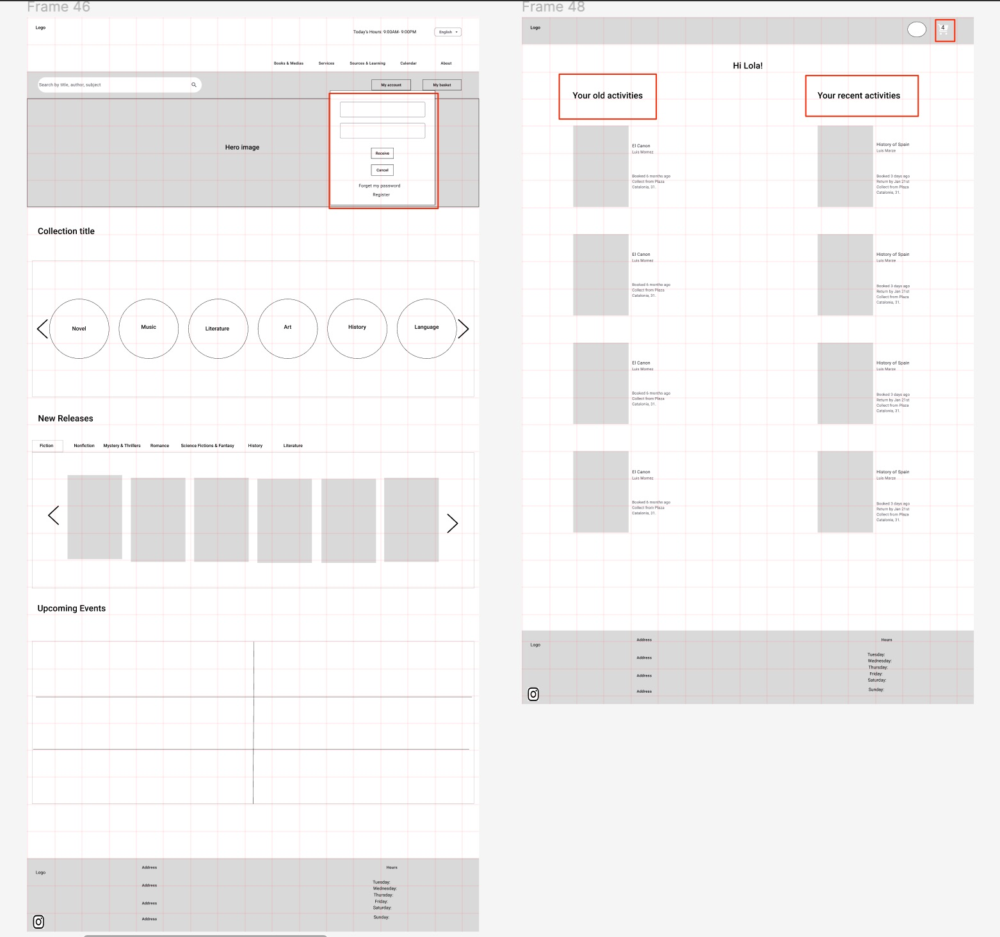

Library
What is Juan Marse Library?
Joan Marse library wants to have a sophisticated and user-friendly digital hub meticulously engineered to facilitate easy access to a wealth of knowledge and resources. It wants to showcase a clean and intuitive user interface, enabling visitors to seamlessly explore an extensive catalog of books, articles, multimedia, and research materials. The website wants to prioritize efficient search and retrieval through advanced search filters and organized categorization. It would like to offer interactive features such as online reservations, renewal options, and a user-friendly account management system. Furthermore, it serves as a dynamic platform for community engagement, promoting library events, workshops, and discussions. With its user-centric approach, seamless accessibility, and commitment to fostering knowledge and community, your library website design sets a benchmark for modern library services.
The city hall in Barcelona asked me to redesign the Juan Marse library website in order to provide a better user-friendly experience for the users. That’s what I did.
PROJECT OVERVIEW
| Product | My Role | Software |
|---|---|---|
| Library website | UX researcher & UX designer | Figma, Sketch, photoshop, Adobe XD |
Objectives
The Juan Marse library in Barcelona wants to offer to book lovers new features and develop a user-friendly website. So, my understanding was that we need to focus on user-friendly website for the users.
Design Goals
- Users can easily reserve the book online and pick it up later in a library
- Librarian can be informed which book to prepare beforehand
- Users can easily access to upcoming releases
- Users are informed to return the books on time
- Users can filter their favourite genre
The Process
| Discover | Define | Develop | Design | Deliver |
|---|---|---|---|---|
| Business Research | Problem & Solution Statement | Scenario | Ideation, Sketches | Final Wireframe |
| User Research | Create Persona | User Flow | Wireframes | Clickable Prototype |
| Competitive Research | User Testing, Iterations |
The Challenges
The Problems
- Users face issues with the amount of time and effort required for tasks such as searching, and browsing.
- Users have problems when and where they can pick up the books. They go to the library but the book is not available.
- Users can’t reserve the books online.
- Users can’t find the upcoming release easily in the website.
- Librarians aren’t informed when the clients come to pick up their books.
- Librarians can’t prepare the reserved books beforehand as they aren’t informed.
- Users don’t return their books on time.
- Users don’t know when unavailable books is available.
The Solutions
- Allow filtering option to make the process for the user easier to see their favourite topics.
- Promote the website that simplifies the search process with user-friendly features, informative search results.
- Provide a new capability for users to be able to reserve the book online and see where to pick up.
- Provide a capability to see upcoming releases.
- Promote the librarian account to see the information about the books to be reserved and returned.
- Provide an automatic email to inform the users to return their reserved books on time.
- Provide a notification button to inform the users when their favourite books will be available.
DISCOVER
Business Analysis
Research has shown that most of the libraries in Barcelona don’t have the feature of reserving books and they don’t let you reserve any book. The users can’t find the upcoming releases easily in the page either. The research also shows that librarians have a stressful job since they can’t prepare the books for the clients in advance so the clients are complaining a lot for waiting so much time in a line. Another complaint comes from the users who don’t know when their favourite book is available. Besides that, the clients don’t return their books on time. Many libraries are losing their clients for the mentioned reasons. So, Juan Marse library revolutionary design provides many new features in its website such as reserving a book capability, upcoming releases section, having an account for librarian, and etc.
Heuristic Evaluation
Usability Testing ( Usability Huristics)
Current state analysis
To develop a concrete roadmap to address the pain points, we understood the complexities that form the current state.
Finding: ( Analysis Heuristics)
Previous website
Observations:
- Juan Marse logo is not present.
- Navigation terms are not user-focused.
- It’s unclear where users can see upcoming releases.
- Not clear if users can reserve the book or not.
- No filtering feature can be seen.
- Not clear if the user can have have a personal profile or not.
- Not clear where librarians can log in to their accounts.
- Not clear when the unavailable book is available.
The current website as you can see has many problems. The website has a very poor structure and is completely disorganized.
What can we do?
After discussions, we concluded that we need to make a complete website redesign. We outlined our client’s ultimate goal and developed an approach plan to make steps toward meeting her goal. Our approach plan is to oriented to develop the user-friendly website.
Previous website
We concluded:
A total redesign of the website is needed to establish a user-friendly website.
Approach Plan is to nalyze other libraries to:
- Develop user-friendly experience
- Provide a feature to reserve a book
- Make the upcoming releases visible on the navigation
- Provide an account feature for librarians
- Provide filtering option
- Provide a capability for adding and seeing reviews of other readers
- Provide a notification button when unavailable book is available
Online Survey & Major Outcomes
To set the research in the right direction, our next step was to craft an online survey to research the experience of our possible users, discover their needs and unpack the insights. There were a total of 20 questions. We received a total of 248 responses. We followed up with 11 participants. Some questions are as follows:
- What’s your age?
- How many hours do you read book every week?
- How often do you go to the library?
- What are you looking for more when going to the library website?
- Can you tell us why do you go to the library or library website?
- How much on average do you spend on a library website?
- Do you usually reserve book from the library online or in the library?
- When was the last time you feel discomfort on a library website? What was the reason?
Contextual Research
My Observation is that most people that go to the library website:
- The 20s, 30s, and 40s age group
- Mostly students and employed
- Love reading
- Educated
So I decided that my personas are educated people that love reading a love. They are comfortable to use technology and they don’t mind browsing on the library website.
Competitive Analysis
I conducted thorough research of potential competitors and discovered some libraries are comparable to our goals.
Biblioteca de la Universidad Pompeu Fabra (UPF) is their biggest competitors. Also investigated UPC university library, Joan Miro library, and Sagrada Familia library. I evaluated the quality of competitors’ product such as their strengths and weaknesses. I could see that most of the libraries in Barcelona don’t have the reservation option. There is not any possiblities to inform the members of the latest release either.
| Juan Marse | UPF | Joan Miro | Sagrada Familia | |
|---|---|---|---|---|
| Reserve a book | ❌ | ❌ | ❌ | ✅ |
| Filtering option | ❌ | ✅ | ❌ | ❌ |
| New releases section | ❌ | ✅ | ❌ | ❌ |
| Easily search for a book | ❌ | ✅ | ✅ | ❌ |
| See the book location | ❌ | ❌ | ✅ | ❌ |
| People’s comment & review | ❌ | ✅ | ❌ | ✅ |
| Have an account for librarians | ❌ | ✅ | ❌ | ✅ |
| Notification email for returning books | ❌ | ✅ | ✅ | ❌ |
| Notification button for unavailable books | ❌ | ❌ | ❌ | ❌ |
The Competitor’s Websites
I also conducted analyses of competitive websites. Obviously, I knew our website lacks many features. But, I learned what features our potential competitors are providing on their websites.
DEFINE / ANALYSIS
After my research was completed, I came up with a lot of valuable data and I discovered many problems. The next step in our design process is to analyze the data and define the major design problems that should be addressed in our design.
Affinity Mapping
For creating our persona and see what are our pain points and our potential solutions, we conducted affinity mapping.
Important for Library
- Features
- Easiness
- Design
Juan Marse Pain Points
- Lack of reserving feature
- Lack of new releases option in the home page
- No filtering feature
- No comments or reviews of other readers
- Librarian can’t prepare the reserved books in advance
- Clients don’t return their books on time
- Users don’t know when unavailable book is available
For creating our persona and see what are pain points and our potential solutions, I conducted affinity mapping.
The outcome for Affinity Mapping
- I found out reserving a book feature is the major pain point of our website.
- Lack of review and comments from other readers is another major pain point.
- Lack of ‘New releases’ section in the navigation is another pain point.
- No filtering option is another problem.
- Librarians need more info about reserving and returning books.
- Lack of notification for users to know when unavailable book is available and also when returns the served books.
User Quotes
I asked several questions from different users to see what problems they face when they look at the library website.
Personas
Our representation of the target audience is captured by the data gathered in our research.
The website will be redesigned based on personas’ needs and preferences.
| Library pain points | Probable solutions |
|---|---|
| No filtering option | Adding filtering option for users |
| Website not user-friendly | Emphasize with user over easy access to the website |
| Not reserving a book | Adding reserving feature |
| No new releases section | Adding new release section |
| No comments or reviews from others | Adding people’s comments on the last page of reserving |
| Not informed when unavailable book is available | Adding a button to inform them when the book is available |
| Not informing librarian about reserved and returned books | Adding an account for librarians to see reserved and returned books |
What problem I solved
- Ability to select multiple filters at once
- Add reserving feature
- Adding new release section
- Provide a date range for expected availability and add a button to inform them when the book is available
- Add new section to see people’s comments on the last page of reserving
- Adding an account for librarians to see reserved and returned books
DEVELOP
According to what personas need
For developing the idea we considered A Scenario to respond to our Personas’ needs, and we conducted the user flow to show their journey through the website.
Flow Diagram
Scenario & User Flow
The journey Lola and Javier take to explore the website and reserve her book:
The journey Ana takes to explore the website and find new releases:
DESIGN
Sketching & Prototyping
Ideation
Low-Fidelity Prototype

Refinement Based on Usability Testing
- Logo home page
- Short description for each book with mentioning the writer
- People’s reviews
- Reserving a book feature
- New releases section
- Have a personal profile for librarian
- Designed 3 tabs for librarian account
- Have a personal account for users
Mid-Fidelity “Home” Page
Second Iteration Refinement
- Add Contact us on the footer
- The footer should be the full length of the page
- Add Search field on the home page so the user can filter books
- Under each book the topic and the writer is visible
Third Iteration Refinement
- Moved logo to the left top
- Add ‘New release’ section on the navigation
- Have collection title on the home page to be able to choose favourite topic
- Add social media channel on the footer
- Add Basket button on the header
- Add Account button on the header
- Add ‘Collection title’ section on the home page
Mid-Fidelity “Search the book” Page
Second Iteration Refinement
- Add people’s comments and reviews
- Add availability option under the book
- “View more” button is clickable in the same page
Third Iteration Refinement
- Add advanced search capability to filter more options
- Add ‘View more’ and ‘Reserve’ button
Mid-Fidelity “Reserve my book” Process
Second Iteration Refinement
- Add ‘Notify me’ button for unavailable books
- Add a map to show the library location
- Add reserve button to be visible to the users and change its colour
Third Iteration Refinement
- Add which library the users can pick up books
- Add when the user should take the books back
- Confirmation will send to users’ email address or phone number
- Add Remove button
- “Sign in/ Register” option after selecting the book
- The account button changed to the user’s photo after signing in or registering
- Basket shows how many books have been selected on the header
Mid-Fidelity “Librarian” process
Second Iteration Refinement
- Add personal account for users and librarians
- Add 3 tabs for librarian account: Books to be reserved, Books to be collected, Books to be returned
- Add ‘Ready to be collect’ button on the ‘Books to be reserved’ tab
Third Iteration Refinement
- Add ‘Delivered’ and ‘Back to shelves’ buttons on the ‘Books to be collected’ tab
- Add a table for librarian to have a complete picture of their clients
- Add the ‘Returned’ and ‘Send notification to return’ buttons on the ‘Books to be returned’ tab
- Add the warning dialogue box for the librarian

DELIVER
Digital Wireframing
High-Fidelity Prototype
For the hi-fi prototype, we designed different pages such as: Home, Search, Reserve the book, and Librarian page.
Interactive Design process
Digital Prototype
Home page
This is how the user selects one genre from the homepage and what result they can see. They have View more, Notify me, and people’s comments in their search.

Advanced search
Then the user can use the advanced search to find their favourite books.

Reserving a books
The user can reserve as many book as they want. They can see which library has the book and how to receive the reservation information.

Librarian flow
The librarian can sign in to their account to see which and how many books they need to prepare. They see a table with 3 stages: Books to be reserved, to be collected, and to be returned. In the first section, they send notifcation to the clients to collect the book. Then, they go to the second stage to click whether the book delivered or not. If it is delivered, they click the ‘Delivered’ button and the book will be removed from the list.

If the book isn’t collected after 24h, the ‘Back to shelf’ button will be active and the librarian can return the book to the shelf. Then the librarian can go to the last stage to check if the book is returned on time. If the book is returned, they can click the ‘Return’ button and the book will be removed from the list. If the book isn’t returned yet, the librarian can send notification to infrom the user to return the book.

New release capability
Another capability of the website is having an easy access to the new releases books. The user can click the favourite genre and then book to see which library has their book. They can reserve it online.


Next step:
- Keep in touch with interested users via emails
- Consider a change in the menu
- Add more sections to the home page